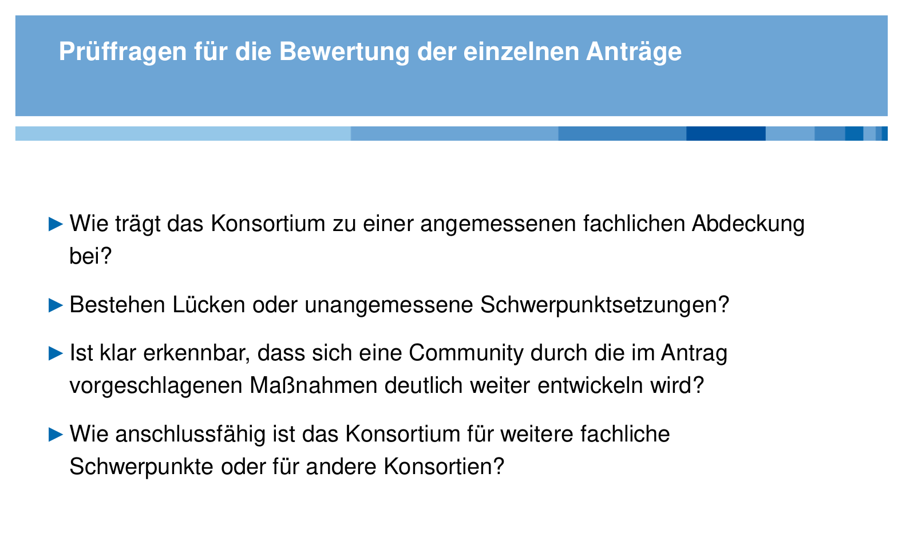

# Drittes Treffen des Forum NFDI <br/> <hr/> <br/> <p>Moderation<br/>Christof Schöch (DHd-Verband)</p> <br/> <hr/> <br/> <p><strong>20. Juli 2020</strong></p> <p>Folien: <a href="https://dh-trier.github.io/slides/nfdi-2020.html/">https://dh-trier.github.io/slides/nfdi-2020/</a></p> <br/> -- #### Programmübersicht * 9:00 Begrüßung * 9:10 Kurzvorträge aus den Konsortien<br/>- Prof. Torsten Schrade, NFDI4Culture<br/>- Prof. Dr. Johannes Paulmann, NFDI4Memory<br/>- Prof. Dr. Alexandra Busch, NFDI4Objects<br/>- Regine Stein, Text+ * 9:45 Offene Diskussion zu den Vorträgen * 10:15 Fokusthemen des Forum NFDI * 10:45 Fazit: nächste Schritte und nächster Termin * 10:55 Verabschiedung * 11:00 Ende der Veranstaltung -- #### Memorandum of Understanding (Juli 2019) -- #### Petra Gehring (RfII): Fachverbände <img height="550" data-src="img/gehring.png"> -- #### Kerstin Schill (DFG-EG): Prüffragen  -- ## Fokusthemen des Forum NFDI 1. Repräsentation der geisteswissenschaftlichen Fächer 2. Komplementarität der Konsortien 3. Repräsentation der Verbände in den Konsortien einerseits<br/>Rolle des Forum NFDI als Intermediär andererseits -- #### York Sure-Vetter (NFDI)